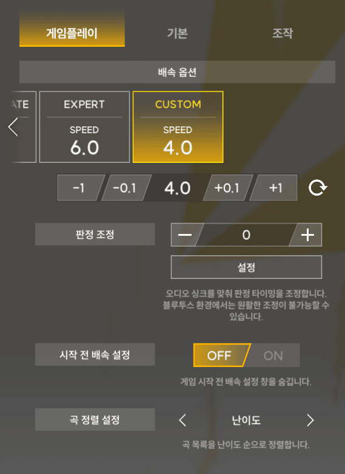
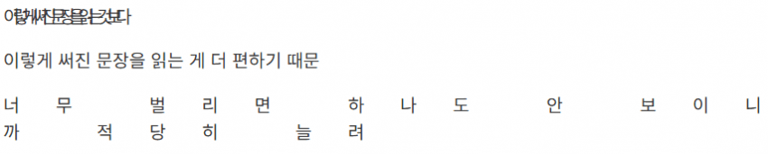
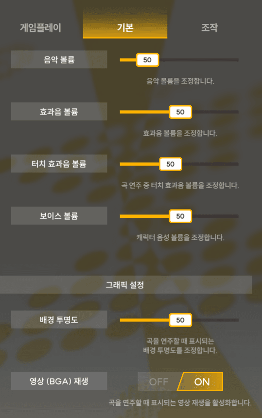
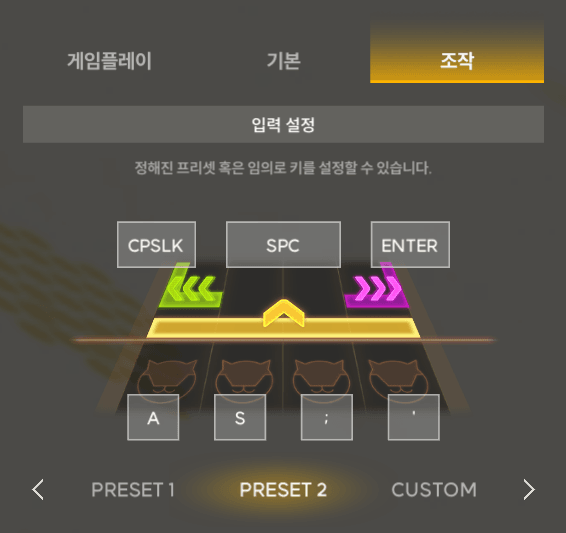
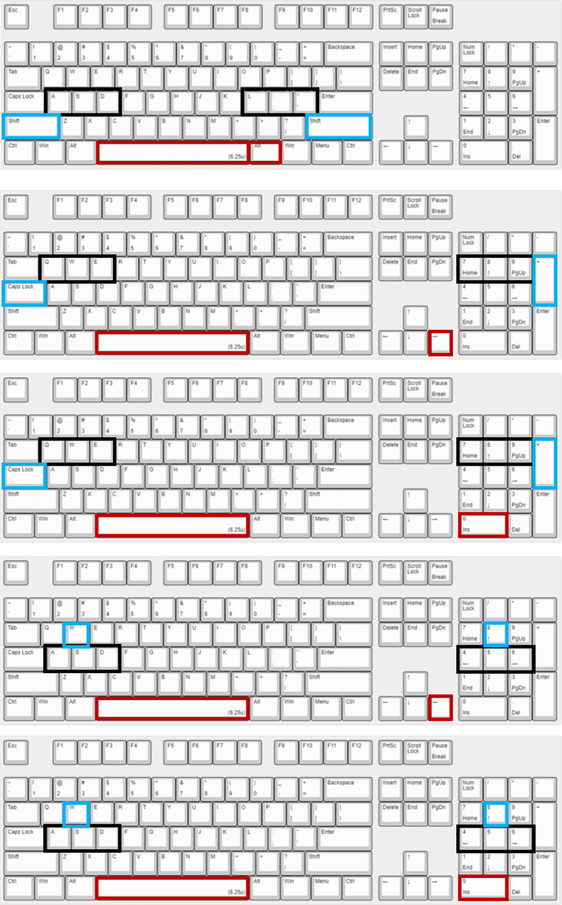
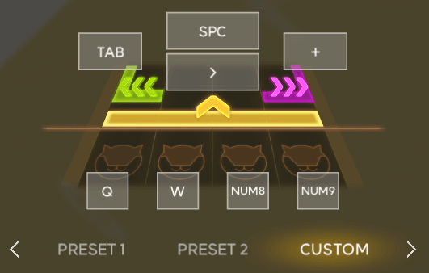
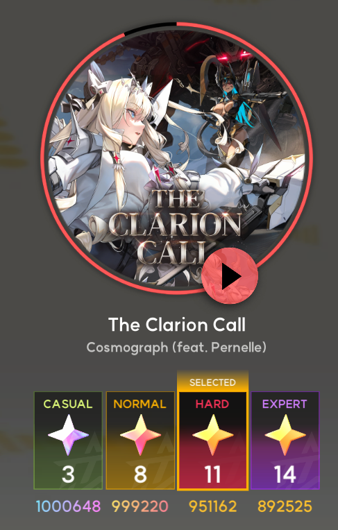

우선 세팅부터

배속은 4

https://gall.dcinside.com/mgallery/board/view/?id=djmaxrespect&no=1143987

노트에 집중이 안되면 bga 재생 off

키 세팅인데
캡스락이랑 엔터로 두면 대부분의 키보드에서 키캡 사이즈가 차이가 나서 구분이 잘됨
CAPS A S ; ' ENT
배치하고 중지와 검지로 AS ;'에 두고 파지하면 새끼손가락에 과한 압박이 들어가지도 않고 좀 더 편할거임
아니면

이걸 참고해서 쓰는 것도 좋아
8키배치.jpg - 디제이맥스 리스펙트 V 마이너 갤러리
참고용 세팅

아래는 연습 추천곡

많은 롱노트와 적당한 플릭노트로 연습하기 딱 좋은 난이도라고 생각함
절대 사심들어간 픽이 아니니 안심하고 하루 한번 클라리온 콜을 즐겨보는 것은 어떨까?